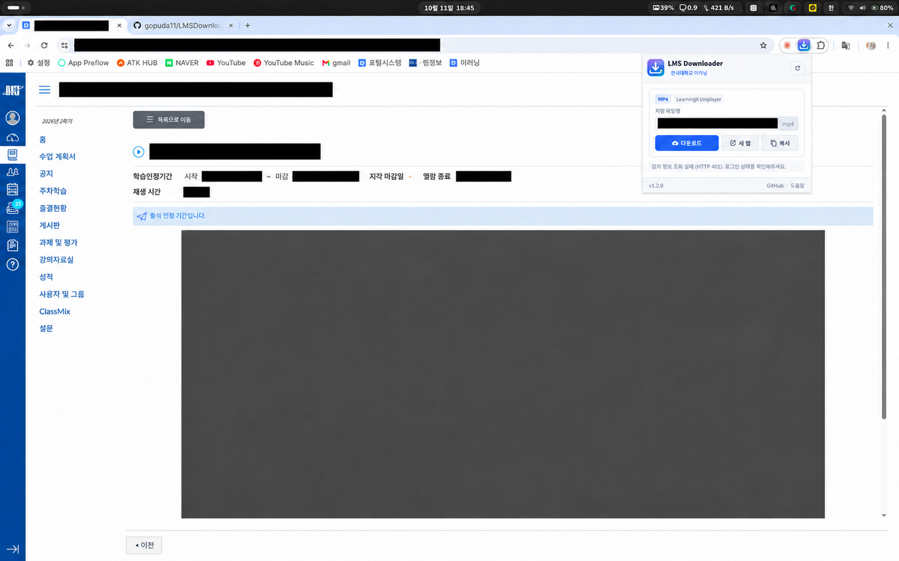

단국대 이러닝 강의 다운로더
LMS Video Downloader · 크롬 확장 프로그램
단국대학교 이러닝(LearningX / Canvas LMS) 강의 영상을 감지해 바로 다운로드하는 크롬 확장 프로그램입니다. Chrome, Edge, Whale, Brave 등 Chromium 계열 브라우저에서 사용할 수 있고 무료입니다.
크롬 웹스토어가 아닌 GitHub에서 배포합니다. 설치 방법은 아래에 있습니다.
기존 DKU Video Downloader를 찾고 계셨나요?
예전에 쓰이던 DKU Video Downloader는 크롬 웹스토어에서 더 이상 제공되지 않습니다. 구형 확장 방식(Manifest V2)으로 만들어져서 최신 크롬에서는 설치하거나 실행할 수 없습니다.
이 프로그램은 그 소스(zinirun/LMSDownloader, MIT)를 바탕으로 최신 Chromium(Manifest V3)에 맞게 일부 수정하고 기능을 더해 다시 배포한 버전입니다.
주요 기능
- 강의 화면에서 재생 중인 영상을 자동으로 감지해 MP4로 다운로드
- 저장 파일명 수정, 새 탭에서 재생, 영상 주소 복사
- PPT / PPTX 강의자료를 브라우저 안에서 PDF로 변환 실제 강의자료로는 아직 미확인
- 사이트 접근 권한을 단국대 서버와 확인된 영상 서버로 제한
설치 방법
Chrome 116 이상 또는 같은 기능을 지원하는 Edge·Whale·Brave에서 사용합니다.
- 최신 릴리스에서
LMSDownloader-v버전.zip을 내려받아 폴더에 압축을 풉니다. - 확장 프로그램 관리 화면을 엽니다. Chrome은
chrome://extensions/, Edge는edge://extensions/, Whale은whale://extensions/입니다. - 개발자 모드를 켜고 압축해제된 확장 프로그램 로드를 누릅니다.
manifest.json이 들어 있는 폴더를 선택합니다.- 툴바에 고정해 두면 강의 화면에서 바로 열 수 있습니다.
업데이트할 때는 새 파일로 덮어쓴 뒤 확장 프로그램 관리 화면에서 새로고침을 누르면 됩니다.
사용 방법
- 단국대 이러닝에 로그인하고 개별 영상 강의 화면을 엽니다.
- 영상 재생 버튼을 누릅니다. 인트로가 있으면 본 영상이 나올 때까지 기다립니다.
- 툴바의 LMS Downloader를 엽니다. 감지가 안 되면 다시 스캔을 누릅니다.
- 파일명을 확인하고 다운로드를 누르면 기본 다운로드 폴더에 저장됩니다.

PDF 변환 사용법과 자세한 설명은 GitHub README에 있습니다.
자주 묻는 질문
크롬 웹스토어에서 DKU Video Downloader를 찾을 수 없어요.
기존 확장은 웹스토어에서 내려갔고 구형 방식이라 최신 크롬에서 동작하지 않습니다. 이 페이지의 버전은 최신 Chromium에 맞게 수정한 것이라 GitHub에서 내려받아 설치합니다.
웨일이나 엣지에서도 쓸 수 있나요?
네. Chromium 계열 브라우저라면 같은 방법으로 설치할 수 있습니다.
로그인 정보가 밖으로 나가지 않나요?
비밀번호, 쿠키, 인증 헤더를 수집하거나 저장하지 않고 개발자 서버로 아무것도 보내지 않습니다. 소스는 모두 GitHub에 공개되어 있습니다.
안 되거나 오류가 나요.
GitHub Issues에 브라우저 종류와 상황을 남겨주세요.